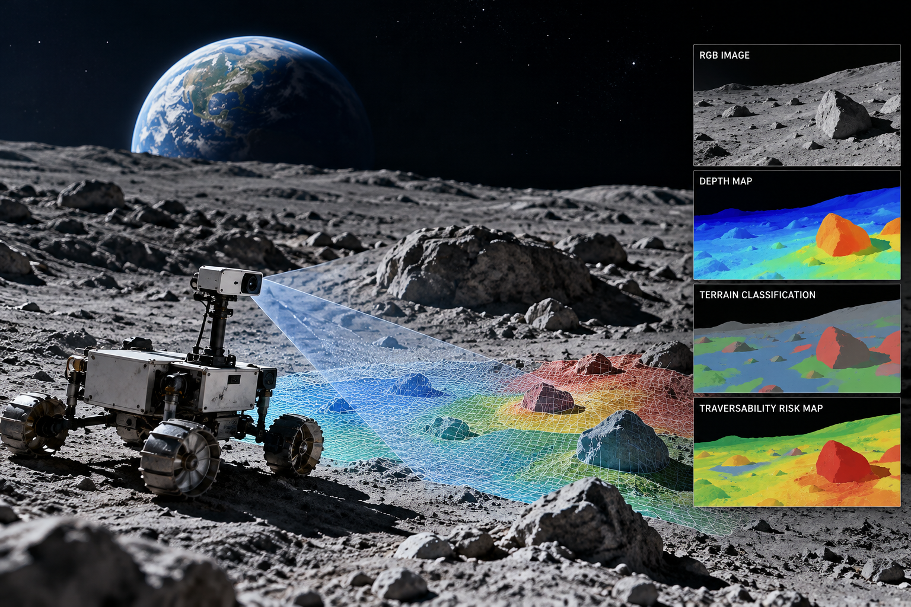

01 / PERCEPTION
COMPUTER VISION
Planetary Terrain Perception
Lightweight semantic understanding of terrain to support robust mobility decisions in planetary environments.
I’m Raihana Shams Islam Antara, a researcher in Space Systems Engineering working on intelligent terrain perception for planetary exploration.

I am a Ph.D. researcher in Space Systems Engineering at Kyushu Institute of Technology (Kyutech), Japan, and a Lecturer in the Department of Electrical and Electronic Engineering at BRAC University, Bangladesh.
My research centers on lightweight terrain perception and autonomous lunar rover traversability assessment, with a broader interest in planetary exploration and embedded intelligent systems.
My experience spans small satellite development, assembly, integration and testing, embedded systems, ground station software, and international space education initiatives.
Developing practical perception capabilities for autonomous mobility in challenging planetary environments.
Lightweight semantic understanding of terrain to support robust mobility decisions in planetary environments.
Terrain assessment and risk characterization for safer autonomous lunar rover traversal.
Resource-conscious perception, mapping, and task-driven LiDAR sensing for embedded rover platforms.
A selection of space engineering, research, and education projects.

PLANETARY SYSTEMSAdvancing autonomous lunar exploration through intelligent terrain perception, traversability assessment, and risk-aware navigation, with a focus on lightweight, resource-efficient solutions for planetary rovers.
Planetary Exploration · Terrain Perception · Traversability · Embedded AIEngineering contributions to BRAC Onnesha, Bangladesh’s first nanosatellite, developed through the BIRDS-1 project.
CubeSat · Systems Engineering · AITLed the development and validation of ground station software for VERTECS (Visible Extragalactic Background RadiaTion Exploration by CubeSat), a 6U astronomical nanosatellite mission dedicated to studying extragalactic background light and understanding the evolution of the universe. Developed an integrated platform enabling spacecraft commanding, real-time telemetry reception, satellite health monitoring, and mission operations across Kyutech and JAXA ground stations, contributing to mission readiness and reliable ground-to-space communication.
Ground Station Software · Mission Systems · OperationsHands-on space systems education and practical satellite engineering training for emerging space communities.
Training · International CollaborationProject visuals are original illustrative graphics. Replace them with your mission photographs and research figures when available.
Shunichiro Ide, Nathan Schilling, Arthur Lacombe, Raihana Shams Islam Antara, Isobel Haddow
Acta Astronautica, Vol. 249, Part A, pp. 491–503, 2026.
Tetsuhito Fuse, Eliza Sapkota, Nobuaki Minato, Raihana Shams Islam Antara
Aerospace, Vol. 13, Issue 4, Article 330, 2026.
Open Access · MDPIInternational Conference on Space Robotics (iSpaRo), 2026
DOI and PDF link to be added.Raihana Shams Islam Antara, Abdulla Hil Kafi, Victor Schulz, Ryo Hashimoto, Yukihisa Otani, Kei Sano, Kenichi Asami
Proceedings of the 76th International Astronautical Congress (IAC 2025), Sydney, Australia, pp. 403–411.
Recognized by the International Astronautical Federation.
Bangladesh’s first nanosatellite deployed from the International Space Station.
Contributions to UNISEC-Global and international capacity-building initiatives.
I am interested in exploring research, academic, and industry opportunities in space systems engineering, planetary exploration, embedded AI, and autonomous systems. I welcome conversations about potential collaborations and future professional roles. I’d be happy to connect.
Academic Email
antara-raihana-shams-islam507@mail.kyutech.jp
Personal Email
raihanashams.antara@gmail.com
LinkedIn
Connect on LinkedIn ↗